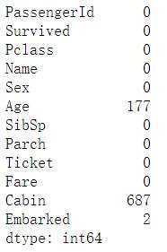
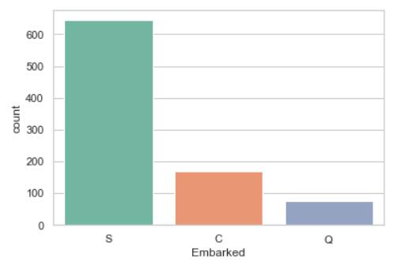
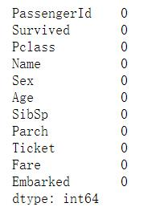
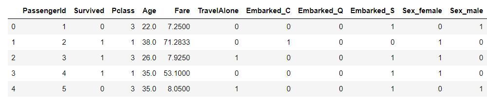
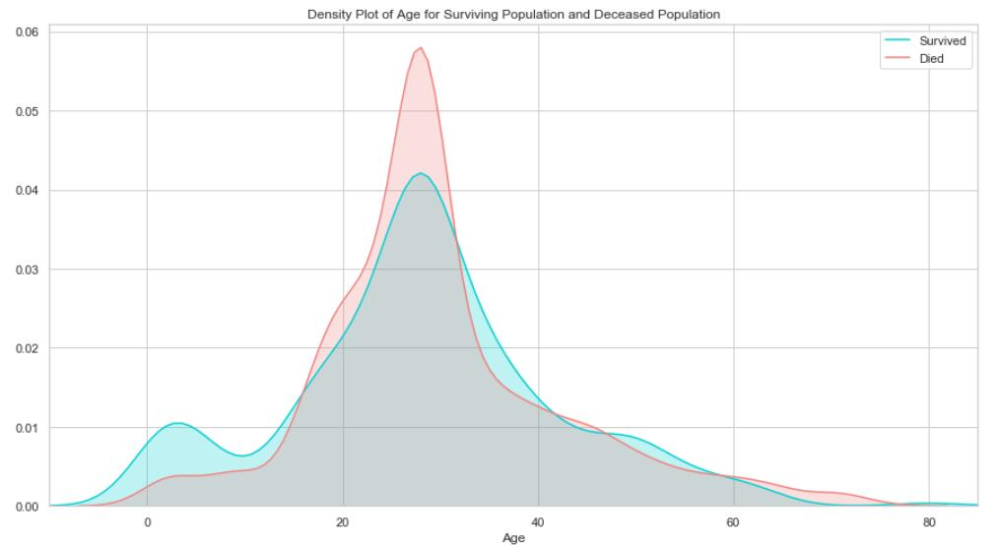
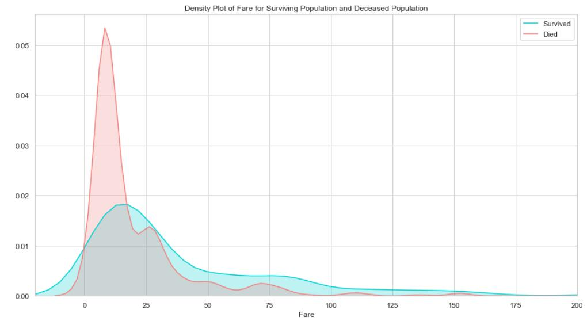
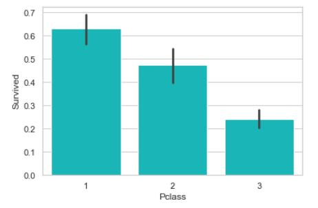
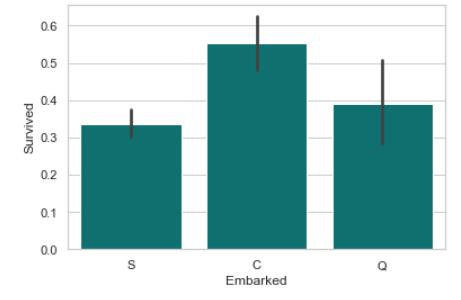
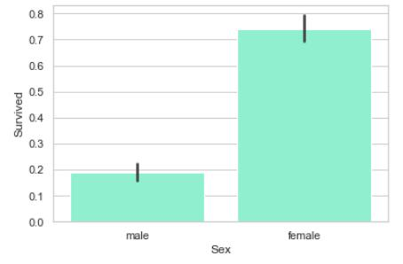
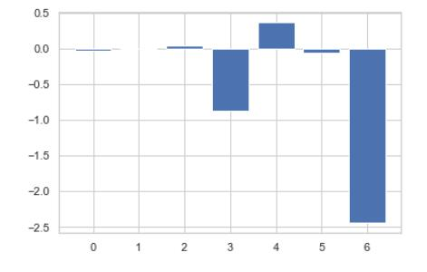

项目介绍
The competition is simple: use machine learning to create a model that predicts which passengers survived the Titanic shipwreck.——Kaggle
Your score is the percentage of passengers you correctly predict. This is known as accuracy. ——Kaggle
2.相关资料
Logisctic Regression介绍
Python源码
数据集
3.分析过程
# 内容来源于：：https://zhuanlan.zhihu.com/p/72237160
# 特征工程与模型调优：https://zhuanlan.zhihu.com/p/38155122
# kaggel数据集：https://www.kaggle.com/c/titanic/overview
# https://www.cnblogs.com/bonelee/p/8632866.html?tdsourcetag=s_pcqq_aiomsg
# 特征权重： https://machinelearningmastery.com/calculate-feature-importance-with-python/
# 0.导入相关包
import numpy as np
import pandas as pd
import seaborn as sns
from sklearn import preprocessing
import matplotlib.pyplot as plt
# 1.预览数据
plt.rc("font", size=14) # 设置字体大小
sns.set(style="white") #设置seaborn画图的背景为白色
sns.set(style="whitegrid", color_codes=True)
# 将数据读入 DataFrame
df = pd.read_csv("train.csv")
print('数据集包含的数据个数 {}.'.format(df.shape[0]))
数据集包含的数据个数 891.
# 预览数据，显示前5行数据
df.head()

# 2.查看数据集中各个特征缺失的情况
df.isnull().sum()

# 2.1年龄缺失百分比
print('"Age" 缺失的百分比 %.2f%%' %((df['Age'].isnull().sum()/df.shape[0])*100))

# 年龄缺失分布
ax = df["Age"].hist(bins=15, color='teal', alpha=0.6)
ax.set(xlabel='Age')
plt.xlim(-10,85)
plt.show()

# 2.1年龄缺失百分比
print('"Age" 缺失的百分比 %.2f%%' %((df['Age'].isnull().sum()/df.shape[0])*100))“Age” 缺失的百分比 19.87%
# 年龄缺失分布
ax = df["Age"].hist(bins=15, color='teal', alpha=0.6)
ax.set(xlabel='Age')
plt.xlim(-10,85)
plt.show()

# 由于“年龄”的偏度不为0, 使用均值替代缺失值不是最佳选择, 这里可以选择使用中间值替代缺失值注：在概率论和统计学中，
# 偏度衡量实数随机变量概率分布的不对称性。偏度的值可以为正，可以为负或者甚至是无法定义。在数量上，偏度为负（负偏态）
# 就意味着在概率密度函数左侧的尾部比右侧的长，绝大多数的值（不一定包括中位数在内）位于平均值的右侧。偏度为正（正偏态）
# 就意味着在概率密度函数右侧的尾部比左侧的长，绝大多数的值（不一定包括中位数）位于平均值的左侧。偏度为零就表示数值相对
# 均匀地分布在平均值的两侧，但不一定意味着其为对称分布。
# 年龄的均值
print('The mean of "Age" is %.2f' %(df["Age"].mean(skipna=True)))
# 年龄的中间值
print('The median of "Age" is %.2f' %(df["Age"].median(skipna=True)))The mean of “Age” is 29.70
The median of “Age” is 28.00
#2.2 仓位缺失百分比
print("仓位缺失百分比 %.2f%% " % (df['Cabin'].isnull().sum()/df.shape[0]*100))
#约 77% 的乘客的仓位都是缺失的, 最佳的选择是不使用这个特征的值.仓位缺失百分比 77.10%
# 2.4登船地点的缺失率
print('"Embarked" 缺失的百分比 %.2f%%' %((df['Embarked'].isnull().sum()/df.shape[0])*100))
#只有 0.23% 的乘客的登船地点数据缺失, 可以使用众数替代缺失的值.“Embarked” 缺失的百分比 0.22%
print('按照登船地点分组 (C = Cherbourg, Q = Queenstown, S = Southampton):')
print(df['Embarked'].value_counts())
sns.countplot(x='Embarked', data=df, palette='Set2')
plt.show()按照登船地点分组 (C = Cherbourg, Q = Queenstown, S = Southampton):
S 644
C 168
Q 77
Name: Embarked, dtype: int64
print('乘客登船地点的众数为 %s.' %df['Embarked'].value_counts().idxmax())
#由于大多数人是在南安普顿(Southhampton)登船, 可以使用“S”替代缺失的数据值
# 2.5. 根据缺失数据情况调整数据
# 基于以上分析, 我们进行如下调整:
# 如果一条数据的 "Age" 缺失, 使用年龄的中位数 28 替代.
# 如果一条数据的 "Embarked" 缺失, 使用登船地点的众数 “S” 替代.
# 由于太多乘客的 “Cabin” 数据缺失, 从所有数据中丢弃这个特征的值.
data = df.copy()
data["Age"].fillna(df["Age"].median(skipna=True), inplace=True)
data["Embarked"].fillna(df['Embarked'].value_counts().idxmax(), inplace=True)
data.drop('Cabin', axis=1, inplace=True)
# 确认数据是否还包含缺失数据
data.isnull().sum()
# 如果数据中持续有缺失值，需要进行填补
#显示缺失值所在的乘客信息
data[data.isnull().values==True]
#显示缺失值所在的乘客信息发现，某一位乘客缺失值太多，直接删除该乘客所有信息。
# data.drop([1309],inplace=True)
# data[data.isnull().values==True]
#还有一人缺失票价信息，用票价众数代替
data.iloc[139,:] # 选择特定行和列，https://pandas.pydata.org/pandas-docs/stable/getting_started/intro_tutorials/03_subset_data.html# 查看年龄在调整前后的分布
plt.figure(figsize=(15,8))
ax = df["Age"].hist(bins=15, normed=True, stacked=True, color='teal', alpha=0.6)
df["Age"].plot(kind='density', color='teal')
ax = data["Age"].hist(bins=15, normed=True, stacked=True, color='orange', alpha=0.5)
data["Age"].plot(kind='density', color='orange')
ax.legend(['Raw Age', 'Adjusted Age'])
ax.set(xlabel='Age')
plt.xlim(-10,85)
plt.show()
# 2.51. 其它特征的处理 解决多重共线性问题
# 数据中的两个特征 “sibsp” (一同登船的兄弟姐妹或者配偶数量)与“parch”(一同登船的父母或子女数量)都是代表是否有同伴同行.
# 为了预防这两个变量可能的多重共线性, 我们可以将这两个变量转为一个变量 “TravelAlone” (是否独自一人成行)注:
# 多重共线性(multicollinearity)是指多变量线性回归中，变量之间由于存在高度相关关系而使回归估计不准确。比如虚拟变量陷阱
# （英语：Dummy variable trap）即有可能触发多重共线性问题。
## 创建一个新的变量'TravelAlone'记录是否独自成行, 丢弃“sibsp”
# (一同登船的兄弟姐妹或者配偶数量)与“parch”(一同登船的父母或子女数量)
data['TravelAlone']=np.where((data["SibSp"]+data["Parch"])>0, 0, 1)
data.drop('SibSp', axis=1, inplace=True)
data.drop('Parch', axis=1, inplace=True)
# 对类别变量(categorical variables)使用独热编码(One-Hot Encoding), 将字符串类别转换为数值
# 对 Embarked","Sex"进行独热编码, 丢弃 'name', 'ticket'
final =pd.get_dummies(data, columns=["Embarked","Sex"])
final.drop('Name', axis=1, inplace=True)
final.drop('Ticket', axis=1, inplace=True)
final.head()
3. 数据分析
#3.1. 年龄
plt.figure(figsize=(15,8))
ax = sns.kdeplot(final["Age"][final.Survived == 1], color="darkturquoise", shade=True)
sns.kdeplot(final["Age"][final.Survived == 0], color="lightcoral", shade=True)
plt.legend(['Survived', 'Died'])
plt.title('Density Plot of Age for Surviving Population and Deceased Population')
ax.set(xlabel='Age')
plt.xlim(-10,85)
plt.show()
# 3.2. 票价
plt.figure(figsize=(15,8))
ax = sns.kdeplot(final["Fare"][final.Survived == 1], color="darkturquoise", shade=True)
sns.kdeplot(final["Fare"][final.Survived == 0], color="lightcoral", shade=True)
plt.legend(['Survived', 'Died'])
plt.title('Density Plot of Fare for Surviving Population and Deceased Population')
ax.set(xlabel='Fare')
plt.xlim(-20,200)
plt.show()
生还与遇难群体的票价分布差异比较大, 说明这个特征对预测乘客是否生还非常重要. 票价和仓位相关, 也许是仓位影响了逃生的效果, 我们接下来看仓位的分析.
#3.3. 仓位
sns.barplot('Pclass', 'Survived', data=df, color="darkturquoise")
plt.show()
# 3.4. 登船地点
sns.barplot('Embarked', 'Survived', data=df, color="teal")
plt.show()
#从法国 Cherbourge 登录的乘客生还率最高
# 3.5. 是否独自成行
sns.barplot('TravelAlone', 'Survived', data=final, color="mediumturquoise")
plt.show()
# 独自成行的乘客生还率比较低. 当时的年代, 大多数独自成行的乘客为男性居多.
# 3.6. 性别
sns.barplot('Sex', 'Survived', data=df, color="aquamarine")
plt.show()
# 4. 使用Logistic Regression做预测
from sklearn.linear_model import LogisticRegression
from sklearn.model_selection import train_test_split
from sklearn.metrics import accuracy_score
# 使用如下特征做预测
cols = ["Age","Fare","TravelAlone","Pclass","Embarked_C","Embarked_S","Sex_male"]
# 创建 X (特征) 和 y (类别标签)
X = final[cols]
y = final['Survived']
# 将 X 和 y 分为两个部分
X_train, X_test, y_train, y_test = train_test_split(X, y, test_size=0.2, random_state=2)
# 检测 logistic regression 模型的性能
# TODO 添加代码:
# 1.训练模型,
# 2.根据模型, 以 X_test 为输入, 生成变量 y_pred
logreg = LogisticRegression()
logreg.fit(X_train, y_train.values.reshape(-1))
y_pred = logreg.predict(X_test)
# print('在测试数据集上面的预测准确率: {:.2f}'.format(logreg.score(X_test, y_test)))
print('Train/Test split results:')
print("准确率为 %2.3f" % accuracy_score(y_test, y_pred))
Train/Test split results:
准确率为 0.765
from sklearn.metrics import classification_report
print(classification_report(y_test, y_pred))
#ROC曲线
#曲线下方所围面积越大，分类效果越好
from sklearn.metrics import roc_auc_score
from sklearn.metrics import roc_curve
logit_roc_auc = roc_auc_score(y_test, logreg.predict(X_test))
fpr, tpr, thresholds = roc_curve(y_test, logreg.predict_proba(X_test)[:,1])
plt.figure()
plt.plot(fpr, tpr, label='Logistic Regression (area = %0.2f)' % logit_roc_auc)
plt.plot([0, 1], [0, 1],'r--')
plt.xlim([0.0, 1.0])
plt.ylim([0.0, 1.05])
plt.xlabel('False Positive Rate')
plt.ylabel('True Positive Rate')
plt.title('Receiver operating characteristic')
plt.legend(loc="lower right")
plt.savefig('Log_ROC')
plt.show()
# 计算变量权重，https://machinelearningmastery.com/calculate-feature-importance-with-python/
importance = logreg.coef_[0]
# print(importance)
for i,v in enumerate(importance):
print('Feature: %0d, Score: %.5f' % (i,v))[-0.02631317 0.00255133 0.04776082 -0.86739052 0.37694478 -0.05459046
-2.44262944]
Feature: 0, Score: -0.02631
Feature: 1, Score: 0.00255
Feature: 2, Score: 0.04776
Feature: 3, Score: -0.86739
Feature: 4, Score: 0.37694
Feature: 5, Score: -0.05459
Feature: 6, Score: -2.44263
plt.bar([x for x in range(len(importance))], importance)
plt.show()
# https://stackoverflow.com/questions/56071964/how-to-create-a-pandas-dataframe-from-two-lists-with-each-value-of-first-list-ha
# df = pd.DataFrame([(i, s) for i in cols for s in importance ], columns=['cols', 'importance'])
feature_importance = pd.DataFrame([cols,importance]).T
print(feature_importance)